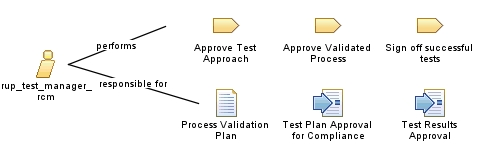

| Role: rup_test_manager_rcm |
| |
 |
|
Synonyms: Quality Assurance (QA) Lead, Quality Assurance (QA) Manager,
Quality Engineering (QE) Manager |
|
Relationships
 |
| Primary Performs |
|
| Modifies |
|
Main Description
Compliance concerns
The key aspects of compliance that have an impact on the responsibilities of the Test Manager include:
-
Testing Application Control
-
-
The need to test against specific compliance requirements of the application, many of which
will be nonfunctional (for example, security aspects, audit controls, and approval
mechanisms)
-
Testing IT Process Controls
-
-
For an application to be deemed compliant, there must be specific controls for the development process
supporting this application. The process validation objectives are to provide "reasonable
assurance" of the correct implementation and operation of the process. The Test Manager and the Process
Engineer will be jointly responsible for the software development validation plan.
-
There are a number of approvals for which the Test Manager is responsible. These include approval of the test plan
and the test results.
|
Staffing
| Assignment Approaches |
There may be a Quality Assurance Manager within the organization who oversees the testing team, but whom also has a
larger remit focused on quality management in general. The Process Engineer may also be part of this quality assurance
team
|
| Synonyms | Quality Assurance (QA) Lead, Quality Assurance (QA) Manager,
Quality Engineering (QE) Manager |
More Information
| Concepts |
|
| Supporting Materials |
|
|